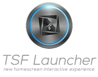

TSF Shell is a unique graphical user interface experience for Android
OS. This premium home screen replacement allows for endless possibilities
as you personalize your widgets and home screens. Say goodbye to the
boring, traditional Android interface!
For more information about TSF Shell release history and to view the demo
of all versions please visit the following link:
http://www.tsfui.com/